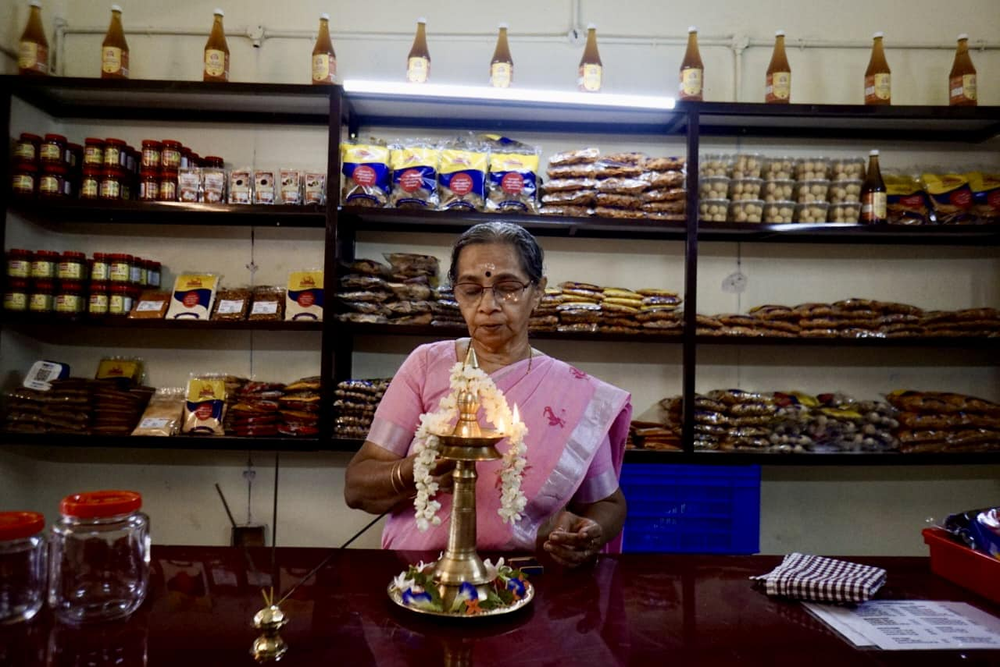
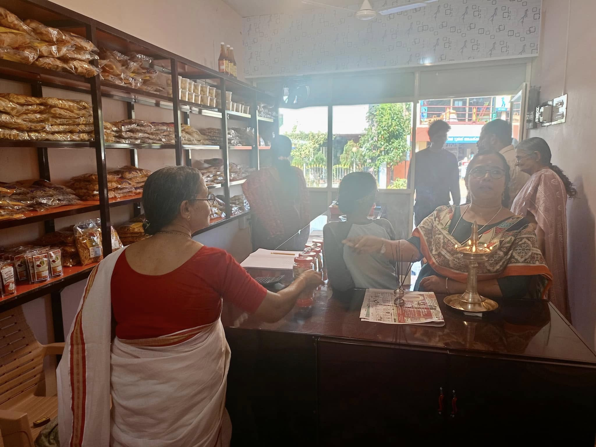
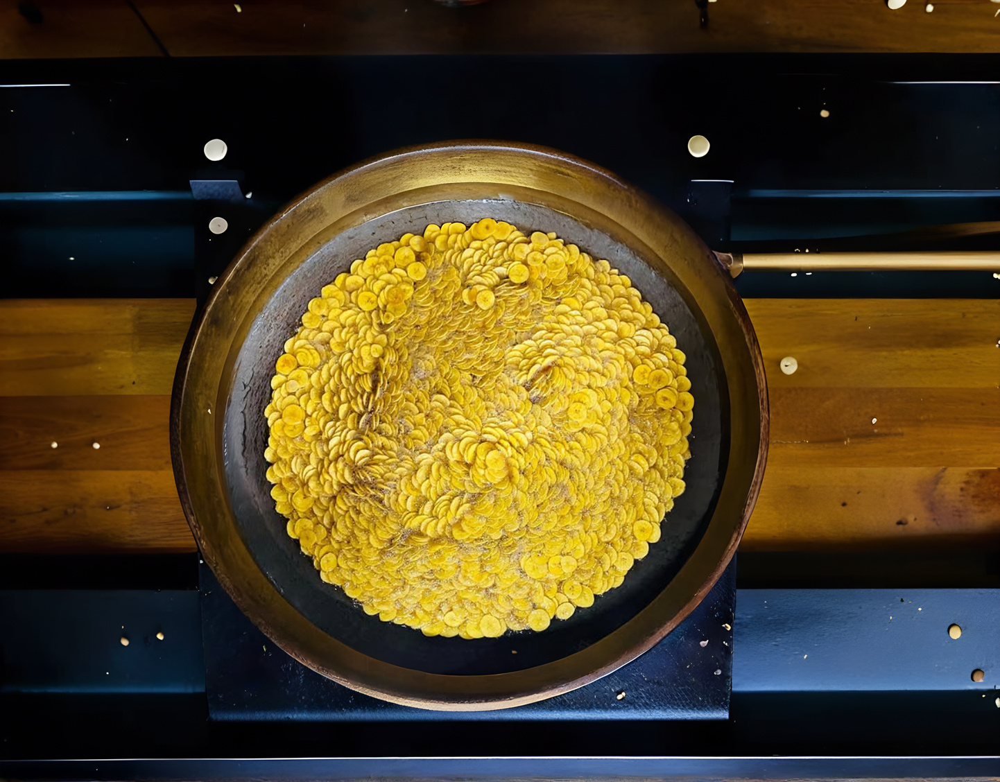

What makes us special?
Varassiar is a renowned brand celebrated for its authentic Kerala chips and traditional snacks. The journey of this brand began with Mrs. Nirmala Varassiar, who, after retiring from her temple job, decided to channel her passion for making traditional Kerala delicacies into a business. Starting from her home kitchen, she gained popularity for the rich, authentic taste of her snacks. One of the unique aspects of Varassiar snacks is the exclusive use of coconut oil in their preparation. Restoring Purity and Authenticity
To restore this sacredness and purity, Varassiar committed to producing adulteration-free food, prepared with the love and care of a mother. By prioritizing quality and purity, the brand aims to honor the timeless tradition of treating food as life itself and to ensure every bite carries the essence of authenticity and trust. Commitment to Quality and Hygiene
Varassiar places a strong emphasis on hygiene and quality at every stage of production. Vegetables like banana, tapioca, taro, etc., are sourced from local marketplaces or directly from farmers to ensure freshness and support local communities. Other ingredients, such as gram, chili, and rice, are carefully procured, washed, dried, and powdered in-house to maintain control over quality. Advanced equipment is used for peeling and cutting, ensuring uniform size, enhanced hygiene, and precision in preparation. 


We have 4 franchises, located at Karunagapally, Mavelikara, Kulanada and Kozhenchery. For precise location, refer to the map given below.
↑